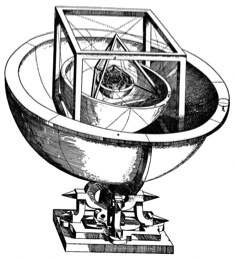

Modelling is not a new development. From Eratosthenes to Einstein, scientists have been building mental models to understand all the wondrous phenomena of the cosmos. Throughout most of history the great mathematicians and scientists upon whose shoulders we now stand developed their models by prediction, observation, experimentation and reflection using all the available tools of their time. They would draw diagrams. They would build physical models. They would create objects to think with: anything to help them capture the fleeting ideas that would occur to them in flashes of inspiration. For the most part, their progress was slow but sure.
With the march of technology from papyrus and paper to PCs and pixels, the tools of our time are computers and software. Computers make it possible for anyone to play with powerful mathematical and scientific concepts in the course of modelling even the simplest objects.
To really appreciate the impact of modelling, you need only compare it with conventional teaching methods. Consider, for example, the challenge of helping learners to grasp the idea of algebraic variables: the dreaded "x" and "y" of introductory algebra. Many learners struggle to grasp the concept of a variable. But within a modelling environment learners intuitively grasp that each object they create has a position onscreen, which is shown by two numbers that vary as the object is moved around. Far from being dissociated from experience, as it is in conventional algebra, variability is something that can be directly experienced within the modelling environment.
Learning by making mistakes
More significant still is the emotional impact of modelling when compared with conventional teaching methods. When a learner makes mistakes on a maths worksheet or test, the errors can easily cause anxiety, humiliation, cognitive distrust and diminished self-esteem. But within a modelling environment mistakes are often a source of surprise and humour. When you try to make an object behave in a particular way and it does something you don't expect, you quickly want to discover where the fault is. This process of accidentally creating faults or "bugs" and fixing or "debugging" the objects is both entertaining and enlightening. Mistakes in the context of modelling are experienced as a source of learning (as they should be, but seldom are, in conventional education). Learners experience bugs as faults with the instructions not faults with themselves. And because learners actively engage in fixing the errors, their solutions to problems and the content they're learning are instinctively memorable.
Paper and pen education simply cannot compare with the rich intellectual and emotional learning experience offered through modelling. However, when modelling is combined with reflections, the result is a radically and deeply empowering learning experience.